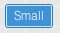
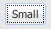
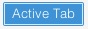
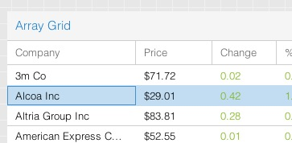
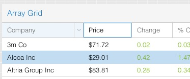
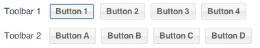
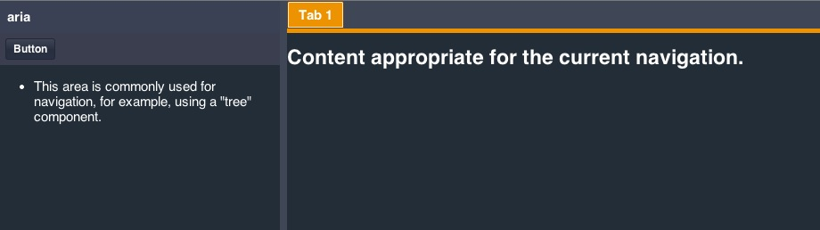

Ext JS 5.0.1+可以通过提供的工具创建高度易访问的JavaScript应用程序, 开发人员需要实现 Section 508 条款 和 ARIA规范. Ext JS使应用程序开发人员更容易创建ui，供人们使用辅助技术来浏览网页.
无障碍易访问性支持概述
软件的可访问性是什么意思？一般来说,无障碍易访问性意味着应用程序的功能和内容是针对如下人群是可用的:
- 残疾人,尤其是视力受损的人
- 那些依赖于辅助技术,如屏幕阅读器来使用电脑的人
- 那些无法使用鼠标导航应用程序的人
- 用键盘远多于鼠标的用户
1998年,美国国会通过了“1973年美国劳工复健法 508 条款修正草案”, 俗称 “Section 508 条款”. Section 508 条款要求联邦机构使所有电子信息方便残疾人使用. Section 508 无障碍易访问性是要求是美国政府机构推行的标准.
当然，可访问性对所有应用程序是有利，因为额外的特性使他们得到更多的用户数量. 可以根据Web 易访问性倡导的( Web Accessibility Initiative’s) “无障碍易访问性支持网页应用技术(Accessible Rich Internet Applications Suite)”来对 Web 应用程序最一些大的调整，以符合 Section 508 条款 , 或称为WAI-ARIA 或者只叫做 “ARIA”.
Ext JS 中的无障碍易访问性支持
多亏了 Ext JS 的内置的标签页索引和可获得焦点功能, 你可以随你的意愿切换和聚焦到你想要获得焦点的地方. 通过这种方法, 我们可以将组件转化为浏览器键盘导航行为可以理解的东西.
Ext JS 中的无障碍易访问性支持 有两个主要目标: 键盘导航切换聚焦元素 和 DOM属性.
自Ext JS 5.0.1起, 焦点和键盘导航功能“一直”都是用的 focusable这个类属性控制的. 这使得所有启用了键盘切换的组件可以响应用户的切换操作.
这一切最终的意思是，应用程序的这部分, 不需要由开发人员做任何额外的修改.
焦点样式
焦点样式方法直观地表明当前元素准备好接受键盘事件或其他用户输入. 这对于无障碍易访问性和严重依赖的键盘导航的用户来说是很有价值的(必要的).
框架提供了一个很直观的标识, 表示焦点组件正在改变. 这个标识通常是以被聚焦元素的内边框或者外边框的形式展现的. 对应用程序的不同主题会稍有不同. 如果要控制这些视觉效果, 你可以修改
和焦点有关的 SASS 变量和混入函数(mixin)参数.
按钮(Buttons)
在以前的版本中, 按钮获得焦点的样式和鼠标悬停在按钮上的样式一样. 这可能会让一些用户觉得混淆. 在 5.0.1+ 之后, 我们改成了用 “内(inner)” 边框表示被聚焦. Neptune 和 Crisp 主题上，在按钮外层边框之内，会有1像素的实线内边框.

在 Classic 主题, 聚焦边框是以围绕在按钮内部元素(inner element)的虚线轮廓的形式呈现, 就像经典 “Windows”主题那样.

你可能需要控制一个已获得焦点的按钮，在鼠标悬停或者按下之后的样式，以区别于默认的鼠标悬停样式. 要做到这一点, 我们新增了2个 SASS 变量用来改变这2个额外的状态 - “focus-over” 和 “focus-pressed”.
标签页(Tabs)
以前，获得焦点的标签页(Tabs)并没有视觉样式. Ext JS 5.0.1+ 之后, 标签页(Tabs) 类似于按钮. Neptune/Crisp 主题中焦点样式是实现内边框，Classic 主题中则是虚线轮廓.
Crisp:

Classic:
像按钮一样, 标签页(Tabs) 也有SASS变量控制聚焦时的这2个额外状态 - “focus-over” 和 “focus-active”.
表格(Grids)
被聚焦的表格单元格也有一个边框，如下:

此外, 表格列头也可以被聚焦:

个性化焦点样式
我们希望键盘导航的支持可以被许多应用欢迎, 使他们更容易获取更多的用户. 同时，我们知道，各个应用程序有不同的需求和要求. 在某些情况下, 默认焦点样式可能不理想, 所以我们提供了可定制的能力， 使用 SASS 变量 和 混入(Mixin)的一套强大的 API 来个性化任何组件的样式.
所有的变量与焦点样式将“focus”这个词包含在他们的名字中, 所以他们应该很容易在文档中找到. 在到任何你想个性化的组件的类文档，并向下滚动到“CSS变量”一节.
例如, 给“default” 按钮 UI 个性化聚焦时的边框颜色 , 可以使用 $button-default-inner-border-color-focus SASS 变量. 关于如何在您的应用程序中使用SASS的信息请参考主题 指南
键盘导航
你的应用程序中所有可聚焦的组件都可以用键盘导航而不需要鼠标交互. 对 Ext JS 而言, 这意味着按下 tab 键将切换焦点从URL栏到下一个可聚焦的组件上.
然而, 某些容器比如工具栏(toolbars)有着不同的表现. Tab 按钮可以在不同的工具栏中切换，而方向键可在工具栏内部组件之间切换焦点. 这是 WAI-ARIA 标准, 有助于确保更好的可用性, 避免过度按 Tab 键.
对于这个示例, 我们来看看2个工具栏，它们都有可以被聚焦的一些按钮.

如上图所示，切换到 “Toolbar 1” 将会聚焦“Button 1” . 继续按下 Tab 键则会切换到下一个包含可聚焦子控件的控件. 此处, 下一个可聚焦的子控件是“Button A”, 位于“Toolbar 2”内. 可聚焦的子控件可能是 按钮(buttons), 标签页(tabs), 表单控件(form fields), 表格(grids), 等等.
另外, “shift + tab” 可以逆序切换, 遵循和上述同样的规则. 例如, 在 “Toolbar 2”内按下“shift + tab” 将会重新使“Toolbar 1”获得焦点.
聚焦到上面任意一个工具栏, 你也可以使用方向键在不同按钮之间切换焦点. 方向键会循环工具栏内的所有按钮. 直到“Button 4”, 焦点会重新回到“Button 1”.
如果您使用 Tab 键离开一个工具栏, 然后按“shift + tab”回到这个工具栏, 框架将重新聚焦到之前的被聚焦的按钮. 这在你的工具栏或其他可聚焦的容器内创建了一种状态形式.
注意: 焦点进入一个输入框控件, 方向键导航只会在该输入框内操作. tab 或者 shift-tab 键才可以让焦点从输入框内移出.
DOM 属性
组件的DOM元素应该使用属性提供关于元素的类型、状态和描述的语义信息. 这些属性是被辅助设备使用的, 比如屏幕阅读器, 向用户提供口头提示，它可分为2组:
ARIA 角色
ARIA 角色 是一个组件或元素的类型的主要指标. 角色是不变的，在用户和组件交互期间不会发生改变. 在 Ext JS 中最常用的 ARIA 角色 是 部件(Widget) 角色. 许多这些 部件(Widget) 角色 直接和 Ext JS 组件对应. 下面是一些部件(Widget) 角色:
- 工具栏(Toolbars)
- 标签页工具栏(Tab bars)和标签页(tabs)
- 复选框(Checkboxes)
- 单选框(Radio Buttons)
- 按钮(Buttons)
- 面包屑导航组(Breadcrumb Groups)
ARIA 状态和属性
随着用户和组件的交互或者应用程序的状态，DOM 属性可能会发生改变. ARIA 状态的一个例子是“aria-checked” 属性，当用户勾选一个复选框的时候，复选框会设置上该属性. 同样, ARIA 属性的一个例子是表单控件的 “aria-invalid” 属性，它会随着用户的输入或者输入值验证而发生改变.
下面在 ARIA 包(Package)这一部分，我们要讨论的是启用 ARIA 状态和属性.
ARIA 包(Package)
在 Ext JS 6+ 中, ARIA 功能直接集成到了组件的生命周期中. 这意味着你不需要一个特定的 “aria” 包去支持 ARIA 行为. 应用程序现在可以支持屏幕阅读器 (比如 JAWS) 而不需要特殊的其他东西.
不过, 在 Ext JS 5 中, “ext-aria” 包是个独立的 Cmd 包，用来支持 ARIA 状态和属性. ‘ext-aria’ 包必须向其他包一样，在 Sencha Cmd 生成的app.json 文件的requires 块中包含(require).
比如:
"requires": [
"ext-aria"
],修改了app.json文件之后, 只要重新构建(build)应用程序. 你的组件就有 ARIA 状态和属性 这些功能了.
也就是说, 如果你在 Ext JS 5 用“ext-theme-aria”或者在 Ext JS 6 中用 “theme-aria”的话，你不需要包含(require) ARIA 包. ARIA 主题默认会自动包含(require) ARIA 包. 下一部分我们会讨论如何实现 ARIA 主题.
注意: 如果你不熟悉上面说的构建(build)应用程序, 请访问我们的快速入门 查看更多内容.
ARIA 主题
ARIA 主题是一个高对比度主题，使应用程序更容易被视力受损的用户查看. 可以扩展它来创建自定义外观.
将 Ext JS ARIA 主题应用到你的应用程序中, 只需修改app.json 中的theme块 .
默认的主题设置应该是以下其中之一:
Ext JS 5
/**
* The name of the theme for this application.
*/
"theme": "ext-theme-aria",Ext JS 6
/**
* The name of the theme for this application.
*/
"theme": "theme-aria",修改应用程序的app.json文件之后, 只要重新构建(build)应用程序. 应用程序应该就用上了 ARIA 主题，像下面这样:

关于自定义主题的信息,请查看 Ext JS 主题 指南。.
注意: 如果你不熟悉上面说的构建(build)应用程序, 请访问我们的快速入门 查看更多内容.
总结
使用新的关于聚焦和键盘导航的补充，Ext JS 5.0.1+ 具备了支持无障碍易访问性支持的核心功能. ARIA 包 (Ext JS 6 默认已经包含) 和 ARIA 主题提供了一个很简单的方式去创建一个无障碍易访问性支持应用程序. 我们正在努力扩展功能，在将来的版本中提供更健壮的无障碍易访问性支持.